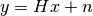
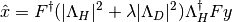
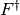
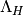
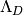
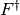
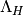
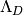

Image restoration module.
| [R262] | François Orieux, Jean-François Giovannelli, and Thomas Rodet, “Bayesian estimation of regularization and point spread function parameters for Wiener-Hunt deconvolution”, J. Opt. Soc. Am. A 27, 1593-1607 (2010) http://www.opticsinfobase.org/josaa/abstract.cfm?URI=josaa-27-7-1593 |
| [R263] | Richardson, William Hadley, “Bayesian-Based Iterative Method of Image Restoration”. JOSA 62 (1): 55–59. doi:10.1364/JOSA.62.000055, 1972 |
| [R264] | B. R. Hunt “A matrix theory proof of the discrete convolution theorem”, IEEE Trans. on Audio and Electroacoustics, vol. au-19, no. 4, pp. 285-288, dec. 1971 |
| skimage.restoration.richardson_lucy(image, psf) | Richardson-Lucy deconvolution. |
| skimage.restoration.unsupervised_wiener(...) | Unsupervised Wiener-Hunt deconvolution |
| skimage.restoration.wiener(image, psf, balance) | Wiener-Hunt deconvolution |
Richardson-Lucy deconvolution.
| Parameters : | image : ndarray
psf : ndarray
iterations : int
clip : boolean, optional
|
|---|---|
| Returns : | im_deconv : ndarray
|
References
| [R270] | http://en.wikipedia.org/wiki/Richardson%E2%80%93Lucy_deconvolution |
Examples
>>> from skimage import color, data, restoration
>>> camera = color.rgb2gray(data.camera())
>>> from scipy.signal import convolve2d
>>> psf = np.ones((5, 5)) / 25
>>> camera = convolve2d(camera, psf, 'same')
>>> camera += 0.1 * camera.std() * np.random.standard_normal(camera.shape)
>>> deconvolved = restoration.richardson_lucy(camera, psf, 5)
Unsupervised Wiener-Hunt deconvolution
Return the deconvolution with a Wiener-Hunt approach, where the hyperparameters are automatically estimated. The algorithm is a stochastic iterative process (Gibbs sampler) described in the reference below. See also wiener function.
| Parameters : | image : (M, N) ndarray
psf : ndarray
reg : ndarray, optional
user_params : dict
clip : boolean, optional
|
|---|---|
| Returns : | x_postmean : (M, N) ndarray
chains : dict
|
Notes
The estimated image is design as the posterior mean of a probability law (from a Bayesian analysis). The mean is defined as a sum over all the possible images weighted by their respective probability. Given the size of the problem, the exact sum is not tractable. This algorithm use of MCMC to draw image under the posterior law. The practical idea is to only draw high probable image since they have the biggest contribution to the mean. At the opposite, the lowest probable image are draw less often since their contribution are low. Finally the empirical mean of these samples give us an estimation of the mean, and an exact computation with an infinite sample set.
References
| [R270] | François Orieux, Jean-François Giovannelli, and Thomas Rodet, “Bayesian estimation of regularization and point spread function parameters for Wiener-Hunt deconvolution”, J. Opt. Soc. Am. A 27, 1593-1607 (2010) http://www.opticsinfobase.org/josaa/abstract.cfm?URI=josaa-27-7-1593 |
Examples
>>> from skimage import color, data, restoration
>>> lena = color.rgb2gray(data.lena())
>>> from scipy.signal import convolve2d
>>> psf = np.ones((5, 5)) / 25
>>> lena = convolve2d(lena, psf, 'same')
>>> lena += 0.1 * lena.std() * np.random.standard_normal(lena.shape)
>>> deconvolved_lena = restoration.unsupervised_wiener(lena, psf)
Wiener-Hunt deconvolution
Return the deconvolution with a Wiener-Hunt approach (i.e. with Fourier diagonalisation).
| Parameters : | image : (M, N) ndarray
psf : ndarray
balance : float
reg : ndarray, optional
is_real : boolean, optional
clip : boolean, optional
|
|---|---|
| Returns : | im_deconv : (M, N) ndarray
|
Notes
This function applies the Wiener filter to a noisy and degraded image by an impulse response (or PSF). If the data model is

where  is noise,
is noise,  the PSF and
the PSF and  the
unknown original image, the Wiener filter is
the
unknown original image, the Wiener filter is

where  and  are the Fourier and inverse
Fourier transfroms respectively,  the transfer
function (or the Fourier transfrom of the PSF, see [Hunt] below)
and  the filter to penalize the restored image
frequencies (Laplacian by default, that is penalization of high
frequency). The parameter
and  are the Fourier and inverse
Fourier transfroms respectively,  the transfer
function (or the Fourier transfrom of the PSF, see [Hunt] below)
and  the filter to penalize the restored image
frequencies (Laplacian by default, that is penalization of high
frequency). The parameter  tunes the balance
between the data (that tends to increase high frequency, even
those coming from noise), and the regularization.
tunes the balance
between the data (that tends to increase high frequency, even
those coming from noise), and the regularization.
These methods are then specific to a prior model. Consequently, the application or the true image nature must corresponds to the prior model. By default, the prior model (Laplacian) introduce image smoothness or pixel correlation. It can also be interpreted as high-frequency penalization to compensate the instability of the solution wrt. data (sometimes called noise amplification or “explosive” solution).
Finally, the use of Fourier space implies a circulant property of
, see [Hunt].
References
| [R271] | François Orieux, Jean-François Giovannelli, and Thomas Rodet, “Bayesian estimation of regularization and point spread function parameters for Wiener-Hunt deconvolution”, J. Opt. Soc. Am. A 27, 1593-1607 (2010) http://www.opticsinfobase.org/josaa/abstract.cfm?URI=josaa-27-7-1593 |
| [R272] | B. R. Hunt “A matrix theory proof of the discrete convolution theorem”, IEEE Trans. on Audio and Electroacoustics, vol. au-19, no. 4, pp. 285-288, dec. 1971 |
Examples
>>> from skimage import color, data, restoration
>>> lena = color.rgb2gray(data.lena())
>>> from scipy.signal import convolve2d
>>> psf = np.ones((5, 5)) / 25
>>> lena = convolve2d(lena, psf, 'same')
>>> lena += 0.1 * lena.std() * np.random.standard_normal(lena.shape)
>>> deconvolved_lena = restoration.wiener(lena, psf, 1100)